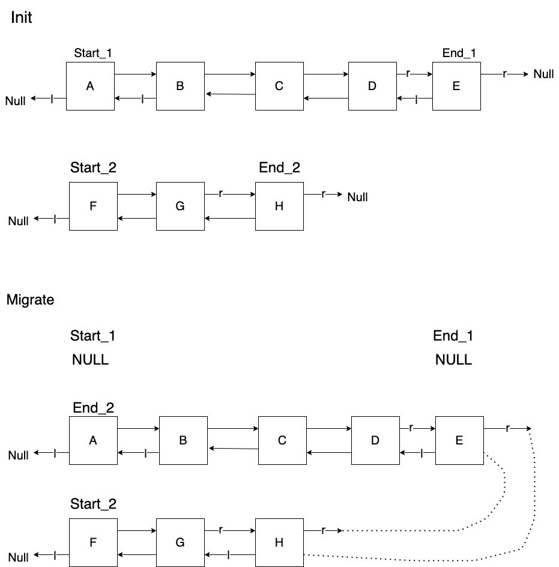

Double Linked List: List migration
Requirement
- Time limit: 1s
- Mem Limit: 65536 KB
Constraint
- n of cargos: max 10e6
- k of lines: 10e3
- l is the index: [0,10e4]
Printout
- print logs from 0-(k-1) lines
- skip null line
Plan

- Reader
- Parse a string
- Parse an int
- Parse an int
- Terminate for EOF
Implementation of Double linked list

https://gist.github.com/mycodeschool/7429492
- 遇到
R:- 如果
r是 NULL: 結束 - 從這裡開始用
l讀
- 如果
- 遇到
L- 如果
l是 NULL: 結束 - 從這裡開始用
r讀
- 如果
List
struct list{
node* start
node* end
}
node
struct node{
int data
node* neighbor[2]
}
Flag Data
flag_r- going right
[1]
- going right
flag_l- going left
[0]
- going left
buffer- do nothing / ignore
update_flag(int* flag, data){
if (data == flag_r){
*flag = flag_r
}
else if (data == flag_l){
*flag = flag_l
}
else if (data == buffer){
do nothing
}
else {
do nothing
}
}
- 除了第一次外 (default
flag= flag_r), 讀到flag data時要確認- 兩邊都不是
NULL- 用新的 flag 繼續
- 有一邊是
NULL- 結束
- 兩邊都不是
- 特性
- Every list is bounded by node with flag data, and paired with
LandR
- Every list is bounded by node with flag data, and paired with
Enter

- New node
- link
.prevtolast node - link
.nexttoEnd
- link
- End node
- Link
.prevtonew node
- Link
- Last node
- Link
.nexttonew node
- Link
function EnterLine(list*,log)
int flag
ptr_end = list->end
# check direction
ptr_last = (list->end.prev == NULL) ? list->end.next
end
Migrate

Reverse a doubly linked list
Memory
- Node
- 1 x
int: 4 byte - 2 x
pointer: 8 bytpe - Sum: 20 byte
- 10e6 nodes:
- 20 MB
- 1 x
{kind=link}
{kind=link}
{kind=link}
{kind=link}